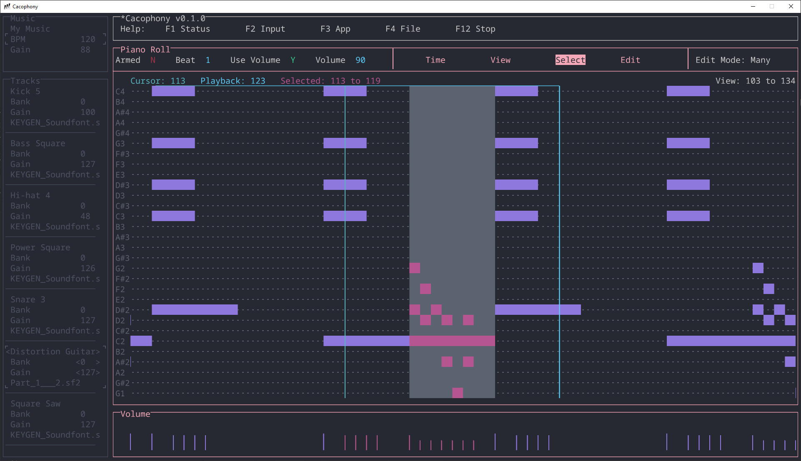

Cacophony is a minimalist and ergonomic MIDI sequencer. It's minimalist in that it doesn't have a lot of functionality MIDI sequencers have. It's ergonomic in that there is no mouse input and a very clean interface, allowing you to juggle less inputs and avoid awkward mouse motions. Cacophony is a proof-of-concept of a different way of making music.

Features
- MIDI sequencer with support for SoundFonts.
- Doesn't try to emulate a real-life studio. If you're an amateur and just want to make music without needing to learn pro software, Cacophony might be for you.
- Qwerty and MIDI input only. There is no mouse input.
- An attractive, customizable ASCII interface.
- Accessible. The entire interface can be read by a text-to-speech engine.
- Export to wav, mp3, ogg, or mid. Optionally, export each track separately.
- Open source.
- Nothing else. Cacophony does what it does, and it doesn't try to do anything else.